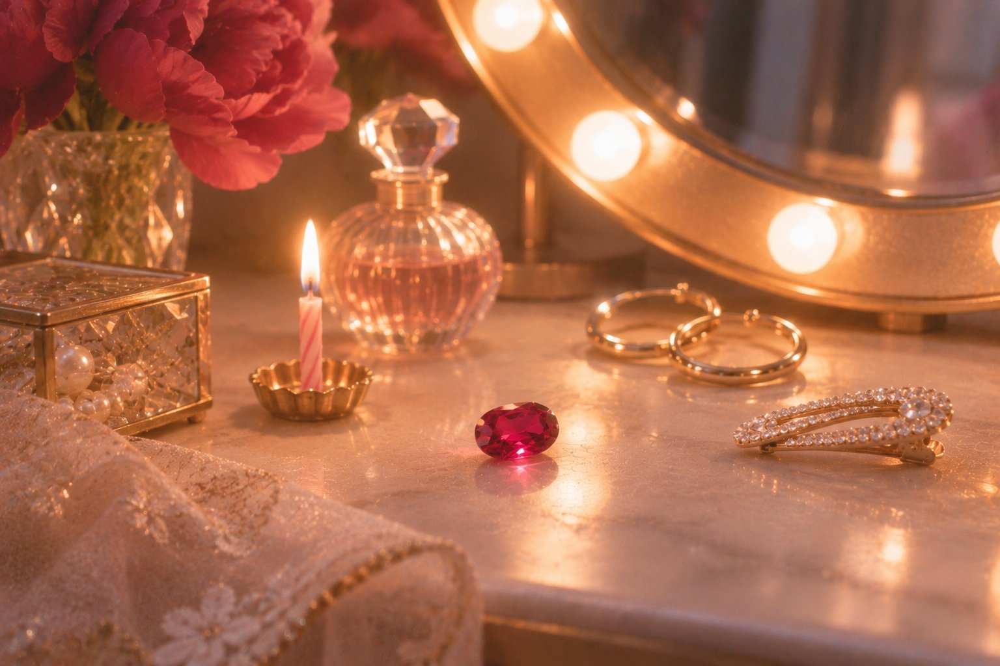
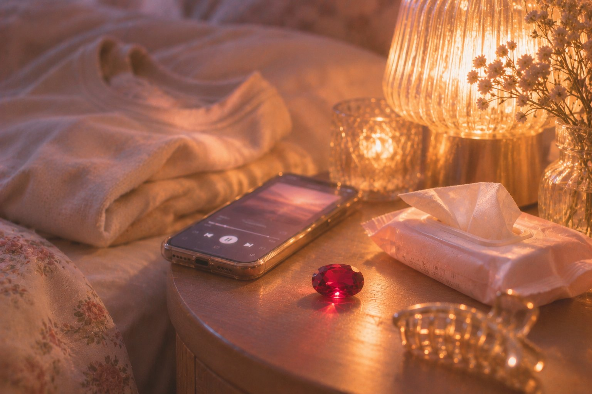

You post a picture looking absolutely incredible, then spend the next twenty minutes checking whether one particular person has seen it. Everyone thinks you're overflowing with confidence. If only they knew. Leo (July 23 to August 22) has a birthstone called ruby, and its glowing red reveals something rather sweet about you.

The Leo everyone knows
Why Does Everyone Think Leo Is So Confident?
You're the girl who turns a casual dinner into an occasion worth dressing up for.
You give enthusiastic compliments to strangers, take approximately thirty pictures of your best friend until she loves one, and make birthdays feel like national holidays.
You've probably practiced an award acceptance speech in the shower for an award that doesn't exist.
And when everyone else feels awkward, you're willing to be a little ridiculous just to make them laugh.
Even an ordinary Tuesday can become someone's favorite memory when they're spending it with you.
The Leo nobody sees
What Do You Secretly Wish Someone Would Notice?
You want someone to think you're beautiful when your hair is a mess and you're wearing an old T-shirt.
You want compliments about things that have nothing to do with how you look.
Sometimes you wonder whether people would still find you interesting if you stopped trying so hard to be interesting.
Ruby is the birthstone of July, the month Leo season begins.
Its glowing red mirrors that enormous, surprisingly tender heart you keep behind your confident smile.
Being admired feels wonderful. Being genuinely known means so much more to you.
Behind the lion's golden smile
Does Leo Really Just Want Attention?
Someone calls you an attention seeker because you were particularly excited about your birthday.
How original.
You've probably spent weeks planning other people's birthdays, remembering their favorite cakes, and finding presents that mean something.
Of course you secretly hope someone will do the same for you.
The funny thing about being the confident friend is that everyone assumes you already know how loved you are.
They see how brightly you fill a room. They rarely think about how it feels when nobody saves a little brightness for you.
When the spotlight goes out
Would Someone Love You Without the Spotlight?
It's 2 a.m. You've taken off your makeup, put on an oversized T-shirt, and found yourself listening to an embarrassingly romantic song.
You imagine someone remembering a tiny detail from a conversation you had months ago.
Someone who notices when your laugh sounds different. Someone who asks how your day went and actually wants the long version.
Maybe ruby red is the color of all that affection you've been saving for somebody.
Tonight, there's no audience to impress. There's just you, hoping to be loved for exactly who you are.

When your ruby side wants out, Gemflow turns ruby into slow-moving light on your phone, so you can watch your inner color for once.
Ruby is the Leo birthstone, a glowing red that mirrors the warm, tender heart behind everything people admire about you.